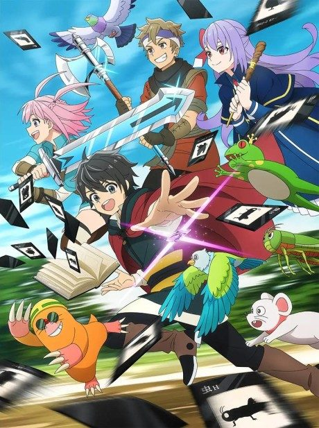
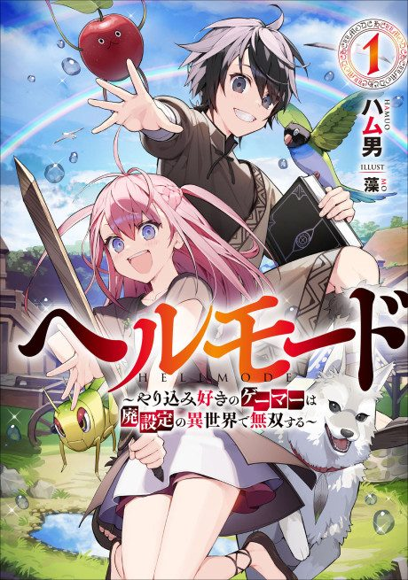

HELL MODE: The Hardcore Gamer Dominates in Another World with Garbage Balancing
ヘルモード ～やり込み好きのゲーマーは廃設定の異世界で無双する～
We haven't found where the anime ends in the light novel yet.
7.2AniList score
—Animeter, no votes yet
25episodes, 2 seasons
Rate it or report where you stopped
2 seasons, 25 episodes
In airing order. Episode numbers on this site count straight through every season, so season 2 starts at episode 13.
1
2026 · TV
HELL MODE: The Hardcore Gamer Dominates in Another World with Garbage Balancing
Episodes1–1212 ep
2
2026 · TV
HELL MODE: The Hardcore Gamer Dominates in Another World with Garbage Balancing Season 2
Episodes13–2513 ep
Sources: AniList